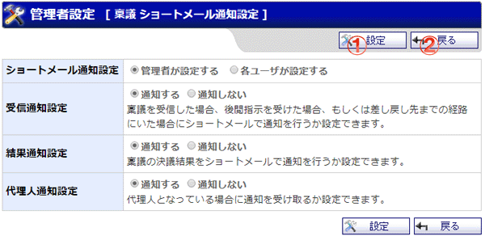

稟議のショートメール通知に関する管理者設定を行う画面です。

機能説明
設定ボタン稟議ショートメール通知設定を登録し、設定完了画面へ遷移します。 |
戻るボタン遷移元の画面へ遷移します。 |
表示・入力項目説明
ショートメール通知設定
管理者が一括で設定するか、ユーザが個別で設定するかを選択します。
受信通知設定
稟議を受信した場合、後閲指示を受けた場合、
差し戻し先までの経路にいた場合の通知設定を行います。
通知名称、通知対象操作、通知先は以下の通りです。
通知名称
対象操作
通知先
申請通知
稟議の申請（再申請）
申請（再申請）時に稟議を受信するユーザ
承認による経路の進行
進行先経路のユーザ
後閲による経路の進行
管理者のスキップによる経路の進行
差し戻し通知
審議者による稟議の差し戻し
差し戻し先までの経路にいたユーザ
後閲通知
審議者による稟議の後閲
後閲指示されたユーザ
確認通知
最終承認経路による稟議の承認決裁
最終確認経路に存在するユーザ
結果通知設定
稟議が決裁された場合の通知設定を行います。
通知名称、通知対象操作、通知先は以下の通りです
通知名称
対象操作
通知先
決裁通知
最終承認経路による稟議の承認決裁
申請者
承認経路に存在するユーザ
却下通知
審議者による稟議の却下決裁
申請者
審議を行ったユーザ
後閲指示されたユーザ
後閲権限を持ったユーザ
管理者によってスキップされたユーザ
完了通知
差し戻し先の審議者による稟議の完了
取り下げ通知
申請者による稟議の取り下げ
審議を行ったユーザ
後閲指示されたユーザ
管理者によってスキップされたユーザ
代理人通知設定
代理人になっている場合の通知設定を行います。通知は代理元の通知設定に依存せず、
代理元に各通知が送信されるタイミングで、代理人に通知が届きます。
通知名称、通知対象操作、通知先は以下の通りです。
通知名称
対象操作
通知先
申請通知
稟議の申請（再申請）
申請（再申請）時に稟議を受信するユーザの代理人
承認による経路の進行
進行先経路のユーザの代理人
後閲による経路の進行
管理者のスキップによる経路の進行
差し戻し通知
審議者による稟議の差し戻し
差し戻し先までの経路にいたユーザの代理人
後閲通知
審議者による稟議の後閲
後閲指示されたユーザの代理人
確認通知
最終承認経路による稟議の承認決裁
最終確認経路に存在するユーザの代理人
決裁通知
申請者の代理人
承認経路に存在するユーザの代理人
却下通知
審議者による稟議の却下決裁
申請者の代理人
審議を行ったユーザの代理人
後閲指示されたユーザの代理人
後閲権限を持ったユーザの代理人
管理者によってスキップされたユーザの代理人
完了通知
差し戻し先の審議者による稟議の完了
取り下げ通知
申請者による稟議の取り下げ
審議を行ったユーザの代理人
後閲指示されたユーザの代理人
管理者によってスキップされたユーザの代理人